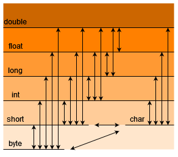

Wir wissen bereits, dass es verschiedene Datentypen gibt, wie z.B. boolean, int, float, String, etc. an manchen Stellen in einem Programm, kann es dazu kommen, dass du eine Variable verwenden möchtest, die nicht den passenden Datentyp hat. Hier kannst du eine Typumwandlung vornehemen. Das nennt man auch Casting. Man unterscheidet zwischen einer expliziten und einer impliziten Typumwandlung.
Implizite Casts
Die implizite Typumwandlung findet automatisch bei der Zuweisung statt. Dies geht jedoch nur, wenn ein niederwertiger Datentyp in einen höher wertigen Datentypen umgewandelt wird, also z.B. vom Datentyp int in den Datentyp float.
int wert = 10;
float wert2 = 30;
// Impliziter Cast ohne cast-Operator: der int-Wert wird in einen float-Wert umgewandelt (gecastet)
wert2 = wert;
Explizite Casts
Die explizite Umwandlung erfolgt durch den sogenannten cast-Operator. Hier wird von einem höherwertigen Datentyp in einen niederwertigen Datentypen umgewandelt.
In welchen Datentyp umgewandelt werden soll, muss bei dem cast-Operator explizit angegeben werden. Sehen wir uns hierzu wieder ein Beispiel an.
int foo = 10;
float bar = 30.6;
// Expliziter Cast mit cast-Operator: der float-Wert wird in einen int-Wert umgewandelt (gecastet)
foo = (int) bar;
println(foo); 30
In dem obigen Beispiel ist (int) der cast-Operator. Er gibt an, dass der folgende Wert in den Datentyp int umgewandelt werden soll.
Genauigkeitsverlust
Bei der Typumwandlung von einem höher wertigen Datentyp in einen nieder wertigen Datentyp kann ein Genauigkeitsverlust stattfinden. Dies ist in oberem Beispiel der Fall: Hier werden die Nachkommastellen einfach abgeschnitten - der Wert wird nicht gerundet! Man muss also vor jedem Cast überlegen, ob man einen Genauigkeitsverlust hinnehmen will oder nicht.
Zufällige Pixel: Float zu Int
Ein klassisches Beispiel, welches euch wahrscheinlich früher oder später begegnen wird oder könnte, ist die Generierung von zufälligen Pixelkoordinaten. Bei Pixeln handelt es sich immer um Ganzzahlen, also Integer. Angenommen ihr möchtet zufällige Pixelkoordinaten generieren, dann könnt ihr die Funktion random() von Processing verwenden. Diese Funktion liefert allerdings als Rückgabewert einen float-Wert. Diesen müsst ihr dann dementsprechend noch zu einem Integer casten:
int randomX, randomY;
void setup() {
size(400,200);
randomX = (int)random(width); // Liefert einen zufälligen float Wert zwischen 0 und width
randomY = (int)random(height); // Liefert einen zufälligen float Wert zwischen 0 und height
}Übersicht Wertigkeit: Implzit vs. Explizit
Auf dieser Übersicht kannst du sehen, welche Typumwandlungen möglich sind und die Rangfolge der Datentypen. Die Datentypen, die weiter oben sind, haben eine höhere Wertigkeit.
Das Casten in eine höhere Wertigkeit erfordert einen impliziten Cast, das Casten in einen niedrigwertigeneren Datentyp muss explizit erfolgen.

Beispiel Char & Int
Schauen wir uns nun an, wass passiert, wenn wir einen char zu einem int casten und umgekehrt. Fangen wir mit dem impliziten Cast an. Da - wie in der Grafik zu sehen - char niedrigwertiger ist als int, bedeutet dies, dass wir einen char in einen int casten, also einen Buchstaben in eine Ganzzahl - ohne Cast-Operator:
// Impliziter Cast
char buchstabe = 'a';
int zahl = buchstabe;
println(zahl); 97Erstaunlich, oder? Wir haben soeben aus einem 'a' eine 97 gemacht. Wie geht das? Wir erinnern uns an das Kapitel Datentypen mit dem Abschnitt über char (Zeichen):
"Intern wird ein Zeichen als ganze Zahl repräsentiert. Diese Zahl entspricht einer standardisierten Tabelle. Für die handelsüblichen Buchstaben ist das zum Beispiel der ASCII-Code (ohne Umlaute). ASCII steht für "American Standard Code for Information Interchange" und ist ganz einfach eine Tabelle, wo für jeden Buchstaben/Zeichen eine Zahl zugeordnet wird."
Das Zeichen 'a' wird in der ASCII-Tabelle somit von der Zahl 97 repräsentiert und wird bei einem Cast in diese Zahl umgewandelt.
Kommen wir nun zum expliziten Cast - also einmal in die andere Richtung von int zu char. hierfür benötigen wir den Cast-Operator:
// Expliziter Cast
int zahl = 1;
char buchstabe = (char)zahl;
println(buchstabe); // Ausgabe ' ' (Leerzeichen)
zahl = 100;
buchstabe = (char)zahl;
println(buchstabe); // Ausgabe 'd'
dWas ist nun hier passiert? Beim ersten Mal (mit der Zahl 1) bekommen wir keine Ausgabe, beim zweiten Mal ein 'd' - wie kommt das zustande? Denken wir wieder an die ASCII-Tabelle: Die Zahl 1 steht in der ASCII-Tabelle für ein Sonderzeichen, welches Processing nicht anzeigen kann, also macht es ein Leerzeichen. Die Zahl 100 steht wiederum für das 'd', weswegen aus 100 dann 'd' wird. Schau dir diese ASCII-Tabelle mal an, wenn du wissen möchtest wie die Zahlen verteilt sind.
Zeichencode
Jedes Zeichen hat einen Code gemäß einer Zeichencodierung (engl. character encoding). Eine Zeichencodierung ist ganz einfach eine Tabelle, wo jedem Zeichen (z.B. 'a', '5' oder '#') eine Zahl zugeordnet wird. Wenn Texte gespeichert oder verschickt werden, werden alle Zeichen des Texts vorher in diese Zahlen umgewandelt. Wenn ein Text wieder geladen bzw. dargestellt werden soll, werden die Zahlen wieder in Zeichen umgewandelt. Das Zeichen '4' hat z.B. den Code 52. In Processing kannst du dir den Zeichencode eines Zeichens z.B. so ansehen:
println((int)'4'); // Umwandlung in int mit Operator52Zusammenfassung
- Das Umwandeln eines Datentyps in einen anderen nennt man auch Cast. Es gibt 2 Arten von Casts:
- Impliziter Cast: Hier wird ein niedrigwertigerer Datentyp in einen höheren Datentyp gecastet. Dies erfolgt ohne Operator.
- Expliziter Cast: Hier wird ein höherwertigerer Datentyp in einen niedrigeren Datentyp gecastet.
- Funktioniert nur in Verbindung mit einem Cast-Operator
- kann zu Datenverlust führen.